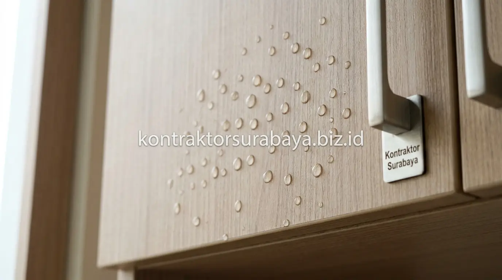
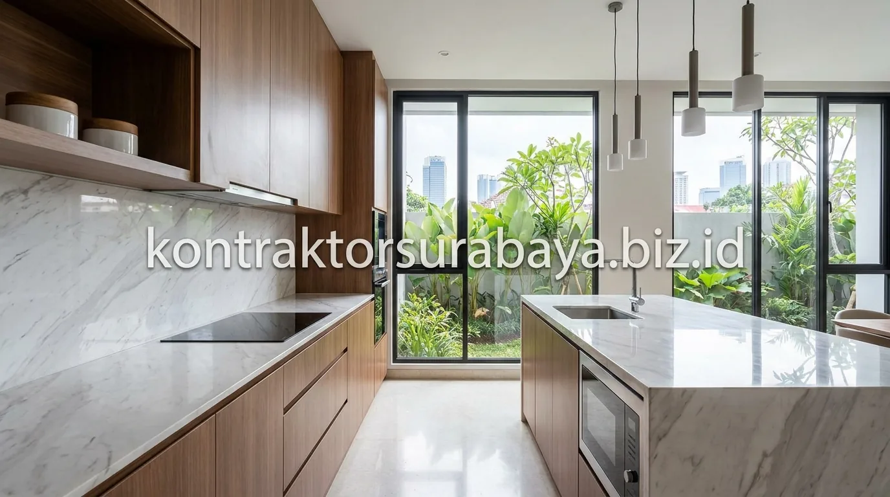

Dapur adalah jantung aktivitas sebuah hunian modern. Namun, lingkungan dapur juga merupakan area dengan tantangan fisik paling ekstrem di dalam rumah: paparan uap panas masakan, cipratan minyak goreng, kelembapan tinggi di sekitar bak cuci piring (sink), hingga potensi serangan rayap pada sudut-sudut kabinet tertutup.
Banyak pemilik rumah di Surabaya dan sekitarnya merasa kecewa ketika kitchen set yang baru dipasang 1–2 tahun sudah mulai melengkung, engselnya copot, atau permukaannya menggelembung akibat salah memilih bahan olahan kayu murah. Untuk memastikan investasi interior dapur Anda bertahan hingga belasan tahun, kombinasi material multiplex berkualitas dengan finishing HPL (High Pressure Laminate) telah menjadi standar emas (gold standard) yang paling teruji keunggulannya.
1. Karakteristik Dasar Material Multiplex untuk Furnitur Dapur
Multiplex (sering disebut plywood atau kayu lapis meranti/palem) tersusun dari lembaran-lembaran kayu solid tipis (veneer) berkualitas yang disusun bertumpuk dengan arah serat kayu saling bersilangan tegak lurus 90 derajat, lalu dipress menggunakan tekanan tinggi dan perekat resin sintetis tahan air.
Struktur berlapis silang ini menghasilkan stabilitas dimensi yang luar biasa. Multiplex tidak mudah memuai, menyusut, ataupun melengkung (warping) saat terjadi fluktuasi suhu dan kelembapan udara. Daya cengkeram sekrup pada sambungan kabinet multiplex jauh lebih kuat dan tidak mudah longgar dibanding papan serbuk kayu pres (particle board atau MDF), menjadikannya pondasi struktural paling kokoh untuk menopang beban rak piring, bumbu, hingga peralatan masak berat.
2. Fungsi Lapisan HPL sebagai Finishing Kitchen Set
High Pressure Laminate (HPL) adalah material pelapis permukaan dekoratif sintetis yang diproduksi dari lapisan kertas kraft bermotif dan resin melamin thermosetting yang dipadatkan di bawah tekanan hidrolik lebih dari 1.000 psi serta suhu mencapai 140°C.
Lapisan HPL berfungsi sebagai perisai pelindung utama yang kedap air (water-repellent), tahan terhadap suhu panas wajan hangat, tahan goresan pisau dapur ringan, serta memiliki ratusan pilihan tekstur estetis mulai dari serat kayu alami (woodgrain), marmer mewah (marble effect), beton industrial (concrete), hingga warna solid matte bebas bekas sidik jari (anti-fingerprint).
3. Keunggulan Multiplex HPL Dibanding Kayu Solid untuk Area Dapur
Ketahanan terhadap kelembapan yang lebih baik, risiko melengkung yang lebih rendah, harga yang lebih terjangkau, dan permukaan yang lebih mudah dibersihkan adalah empat keunggulan multiplex HPL dibanding kayu solid utuh:
- Ketahanan Terhadap Kelembapan Lebih Stabil: Kayu solid alami sangat rentan memuai dan menyusut saat terkena uap air panas, sementara multiplex HPL tetap presisi mempertahankan bentuknya.
- Bebas Risiko Pintu Melengkung: Mengurangi risiko pintu kabinet atas maupun bawah seret atau sulit ditutup rapat setelah bertahun-tahun digunakan.
- Efisiensi Anggaran Proyek: Harga pembuatan kitchen set multiplex HPL berkisar 40–60% lebih ekonomis dibanding kayu solid jati atau mahoni utuh tanpa mengorbankan estetika visual mewah.
- Kemudahan Perawatan Tanpa Coating Ulang: Permukaan HPL tidak memerlukan proses re-varnish atau coating melamin berkala layaknya kayu solid yang kusam termakan usia.
| Bahan Kitchen Set | Ketahanan Air & Uap | Kekuatan Beban / Engsel | Ketahanan Rayap | Rentang Harga |
|---|---|---|---|---|
| Multiplex / Plywood HPL | Sangat Baik (Tahan uap & cipratan) | Sangat Kuat (Sekrup rapat & kokoh) | Tinggi (Resin lem tidak disukai rayap) | Menengah (Best Value for Money) |
| Particle Board / Serbuk | Sangat Buruk (Mudah mengembang) | Rentan patah / engsel cepat jebol | Rendah (Mudah lapuk & berjamur) | Paling Murah (Tidak tahan lama) |
| MDF (Medium Density Fibre) | Kurang Baik (Sensitif area basah) | Sedang (Cukup baik untuk pintu) | Sedang (Butuh lapisan seal rapat) | Ekonomis |
| Blockboard | Cukup Baik | Baik untuk bidang lurus | Sedang (Rentan di celah kayu lunak) | Menengah Bawah |
| Kayu Solid (Jati / Mahoni) | Baik (Namun rentan memuai/retak) | Sangat Kuat & Berat | Tinggi (Khusus kayu tua oven) | Tinggi / Premium |

4. Ketahanan Multiplex HPL terhadap Rayap dan Jamur
Proses fabrikasi multiplex modern menggunakan lem perekat fenolik atau melamin urea berkepadatan tinggi pada setiap lapisan lembaran kayu. Senyawa resin kimia ini secara alami membuat serat kayu tidak disukai oleh rayap kayu kering maupun rayap tanah.
Sementara itu, lapisan HPL yang kedap pori-pori bertindak sebagai pelindung dari kelembapan udara yang biasanya memicu koloni spora jamur hitam (black mold). Agar proteksi ini 100% sempurna, setiap tepi potongan papan kabinet wajib disegel menggunakan PVC edging tebal dengan lem leleh panas (hot-melt adhesive) sehingga tidak menyisakan celah sekecil apa pun bagi kelembapan untuk menyusup ke inti kayu.
5. Perbandingan Multiplex HPL dengan Bahan Alternatif Lain
Memahami perbandingan bahan interior membantu Anda menentukan alokasi anggaran dapur secara cerdas:
- Particle Board: Banyak digunakan pada furnitur bongkar-pasang (flat-pack) impor murah, namun sangat rapuh jika terkena rembesan air pipa wastafel dapur.
- MDF: Cocok untuk panel dinding dekoratif atau pintu dengan profil ukir CNC (finishing duco), namun kurang ideal untuk rangka bodi kabinet basah.
- Blockboard: Tersusun dari potongan kayu lunak yang dilapisi veneer tipis, cukup ekonomis namun daya tahan sekrup engselnya masih berada di bawah multiplex 18 mm.
- Multiplex / Plywood: Pilihan paling seimbang antara daya tahan struktural, usia pakai panjang, dan fleksibilitas desain custom.
6. Perawatan Kitchen Set Multiplex HPL agar Tetap Awet
Membersihkan permukaan dengan lap mikrofiber lembap secara rutin, menghindari meletakkan wajan panas membara langsung ke permukaan HPL, memastikan sambungan lem selalu kering, dan segera mengelap genangan air di sekitar sink adalah empat langkah perawatan mudah:
- Gunakan Kain Lembut & Sabun Cair: Cukup usap dengan air sabun hangat untuk mengangkat cipratan minyak, lalu keringkan dengan lap mikrofiber bersih.
- Gunakan Tatakan Panas (Trivet): Meskipun HPL tahan panas moderat, meletakkan panci langsung dari atas kompor gas dapat merusak daya rekat lem HPL di bawahnya.
- Jaga Ventilasi & Gunakan Cooker Hood: Mengurangi akumulasi uap air pekat di sekitar kabinet gantung atas.
- Cek Kerapatan Sambungan Sealant Wastafel: Pastikan sealant silikon di sekeliling kitchen sink selalu kedap agar air tidak merembes ke kolong kabinet bawah.
7. Kesalahan Umum dalam Memilih Material Kitchen Set
Hanya tergiur harga murah tanpa mengecek grade multiplex, mengabaikan kualitas edging tepi kabinet, memilih ketebalan papan tipis di bawah 15 mm, dan memesan ke tukang amatir tanpa garansi adalah empat kesalahan fatal yang wajib dihindari:
- Tergiur Harga di Bawah Standar Pasar: Pemborong murah sering mengoplos rangka utama menggunakan partikel board atau multiplex grade C yang berongga di bagian dalam.
- Mengabaikan Ketebalan Papan Rangka: Kabinet dengan bentang lebar yang hanya menggunakan multiplex tipis 12 mm akan melengkung setelah diisi tumpukan piring keramik berat.
- Pemasangan Edging Manual Tanpa Mesin Presisi: Edging tipis yang dilem seadanya akan mudah mengelupas dalam kurun waktu beberapa bulan saja.
- Tidak Memeriksa Kualitas Aksesori Engsel: Menggunakan engsel murah non-slow motion membuat pintu kabinet mudah terbanting dan merusak struktur kayu penopangnya.
"Kitchen set custom terbaik bukan hanya tentang warna HPL yang menawan di katalog, melainkan presisi ketebalan multiplex, kualitas edging kedap air, dan ergonomi tata ruang masak yang memudahkan mobilitas harian Anda."
Wujudkan dapur impian keluarga Anda dengan desain 3D personal, material multiplex grade A, finishing HPL bermerek resmi, dan aksesoris engsel soft-close bergaransi. Konsultasikan denah dapur Anda pada halaman jasa desain interior Surabaya, hitung simulasi biaya pada halaman RAB & estimasi biaya interior, atau temukan inspirasi lainnya di galeri portofolio kami.
